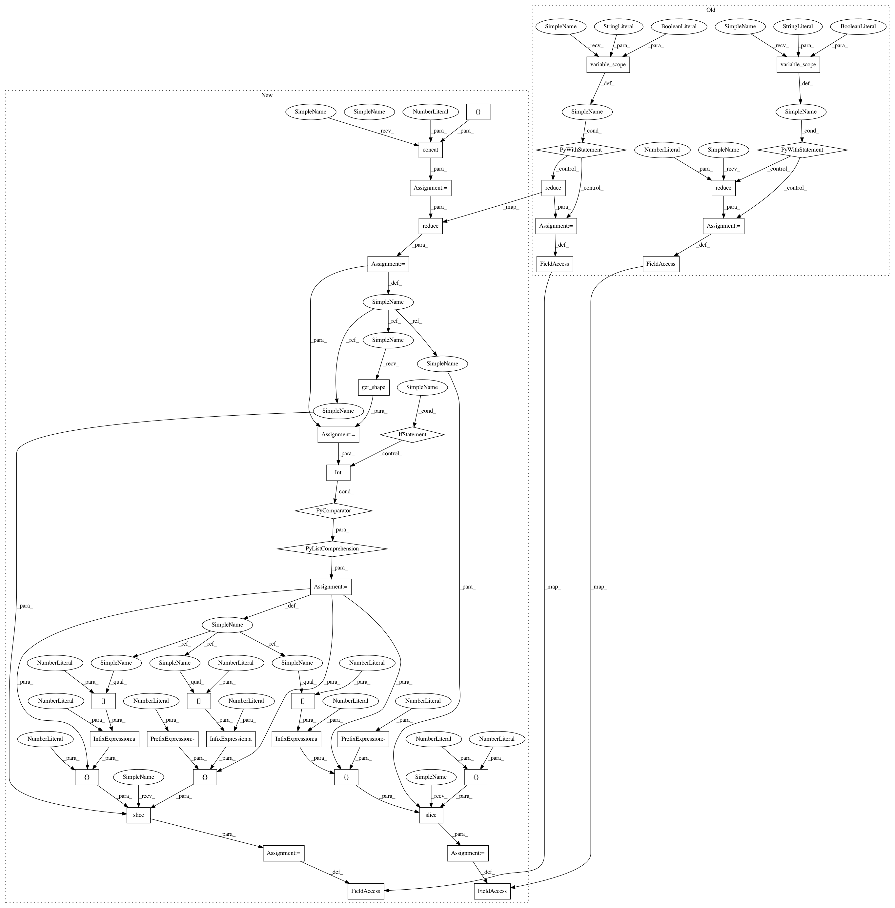

67bdf259d9963859295471d2bf4692ac576bb8fb,hypergan/losses/standard_gan_loss.py,,create,#Any#Any#,16
Before Change
d_real = gan.graph.d_reals[config.discriminator]
d_fake = gan.graph.d_fakes[config.discriminator]
with tf.variable_scope("d_linear", reuse=False):
d_real = config.reduce(d_real, axis=1)
with tf.variable_scope("d_linear", reuse=True):
d_fake = config.reduce(d_fake, axis=1)
zeros = tf.zeros_like(d_fake, dtype=gan.config.dtype)
g_loss = tf.nn.sigmoid_cross_entropy_with_logits(logits=d_fake, labels=zeros)
d_loss = sigmoid_kl_with_logits(d_real, 1.-config.label_smooth)
g_loss = tf.squeeze(g_loss)
d_loss = tf.squeeze(d_loss)
gan.graph.d_fake_loss=tf.reduce_mean(d_fake)
gan.graph.d_real_loss=tf.reduce_mean(d_real)
return [d_loss, g_loss]
linear_projection_iterator=0
After Change
d_real = gan.graph.d_reals[config.discriminator]
d_fake = gan.graph.d_fakes[config.discriminator]
net = tf.concat([d_real, d_fake], 0)
net = config.reduce(net, axis=1)
s = [int(x) for x in net.get_shape()]
d_real = tf.slice(net, [0,0], [s[0]//2,-1])
d_fake = tf.slice(net, [s[0]//2,0], [s[0]//2,-1])
zeros = tf.zeros_like(d_fake, dtype=gan.config.dtype)
g_loss = tf.nn.sigmoid_cross_entropy_with_logits(logits=d_fake, labels=zeros)
d_loss = sigmoid_kl_with_logits(d_real, 1.-config.label_smooth)
g_loss = tf.squeeze(g_loss)
d_loss = tf.squeeze(d_loss)
gan.graph.d_fake_loss=tf.reduce_mean(d_fake)
gan.graph.d_real_loss=tf.reduce_mean(d_real)
return [d_loss, g_loss]
linear_projection_iterator=0
In pattern: SUPERPATTERN
Frequency: 3
Non-data size: 40
Instances
Project Name: HyperGAN/HyperGAN
Commit Name: 67bdf259d9963859295471d2bf4692ac576bb8fb
Time: 2017-02-24
Author: martyn@255bits.com
File Name: hypergan/losses/standard_gan_loss.py
Class Name:
Method Name: create
Project Name: HyperGAN/HyperGAN
Commit Name: 32b8ced6fec636347b89848a98e5aef2aac3fb78
Time: 2017-02-27
Author: martyn@255bits.com
File Name: hypergan/losses/lsgan_loss.py
Class Name:
Method Name: create
Project Name: HyperGAN/HyperGAN
Commit Name: 67bdf259d9963859295471d2bf4692ac576bb8fb
Time: 2017-02-24
Author: martyn@255bits.com
File Name: hypergan/losses/standard_gan_loss.py
Class Name:
Method Name: create
Project Name: HyperGAN/HyperGAN
Commit Name: 7115605e6eeeed54ca29c35fdd89aff664642e1f
Time: 2017-02-27
Author: martyn@255bits.com
File Name: hypergan/losses/wgan_loss.py
Class Name:
Method Name: create